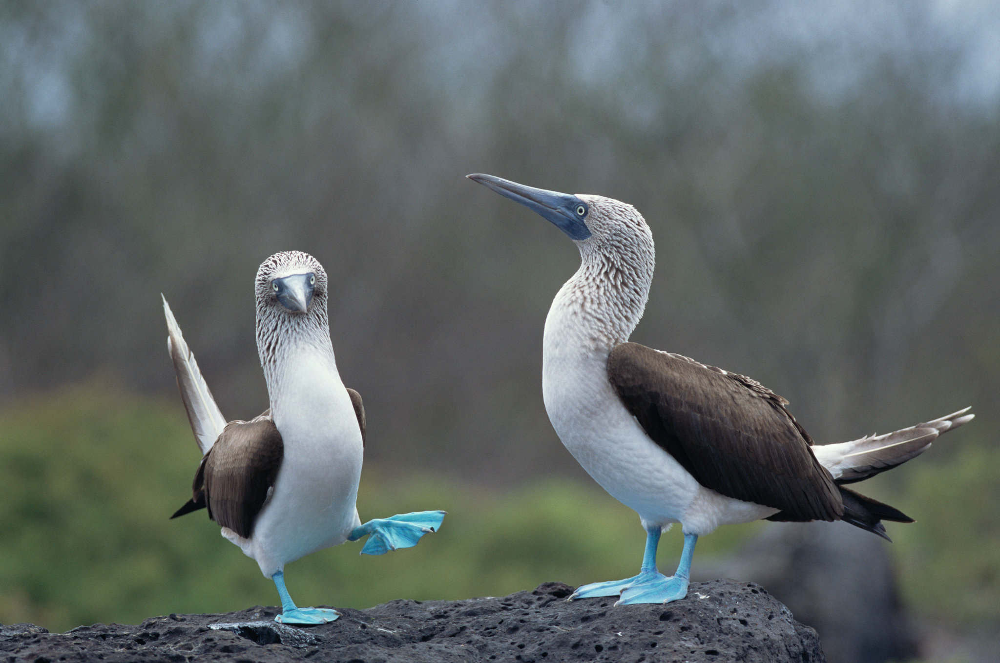

four-oh-four: you found boobies!
From Wikipedia, the free encyclopedia
This article is about the seabird. For other uses, see Booby (disambiguation).
A booby is a seabird in the genus Sula, part of the family Sulidae. Boobies are closely related to the gannets (Morus), which were formerly included in Sula.
